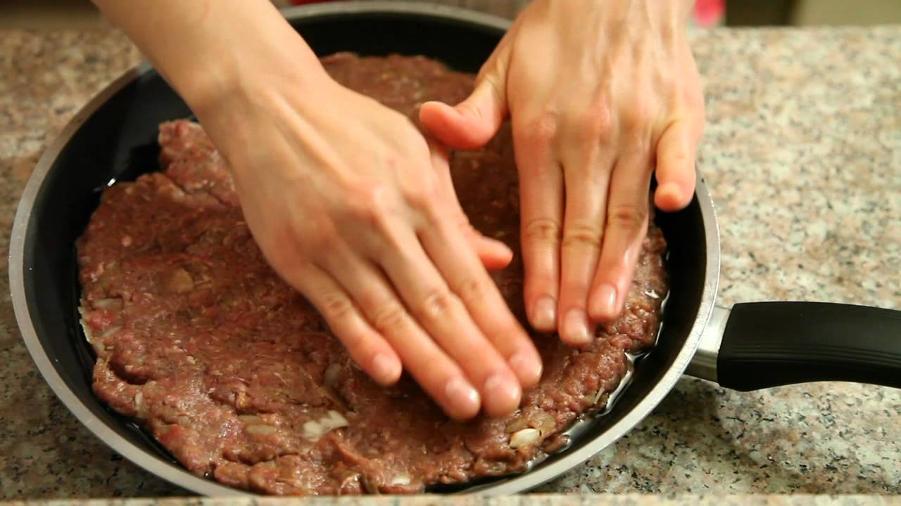

MahiTabe Kebab

Description
An alteration of kebab, originally a Persian dish served in various form throughout Iran to this day, it is a combination of several spices, onions, animal fat, red meat, and good 'ol angry massaging. As with most Persian food, it's served with cooked white rice along with butter to smooth out the rice. If you want to give it even more soul, serve it with dooq, which is another Persian beverage made of yoghurt and water.
Ingredients
- Processed red meat
- 1 big onion
- Salt, pepper, turmeric
Steps
- Grate the onion
- Throw the grated onion, processed red meat, and all the spices into a bowl
- Massage them all
- A mixture is formed. Put this mixture into a pan, flatten it, and cut it into equal divisions (It cooks better and easily distributed among hunger ridden individuals)
- If the mixture doesn't have enough fat, add some cooking or frying oil and fire up the heat.
- Rotate all the divisions 180 degrees so as to let both sides cook.